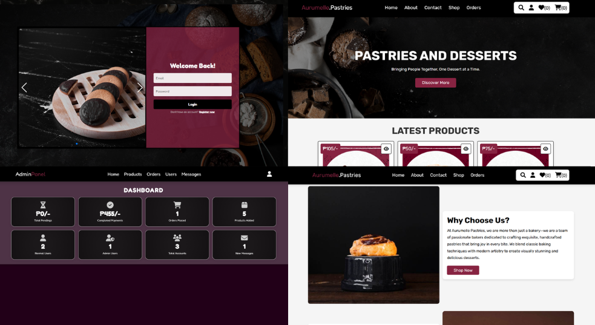

Aurumelle_Pastries
Aurumelle Pastries is an e-commerce website designed to provide customers with a convenient and secure way to purchase pastries and desserts online.
The system supports two user roles: Customer and Administrator. Customers can browse products, add items to their cart or wishlist, place orders, and track payment status, while administrators manage products, orders, and user accounts through a dedicated dashboard.
The platform is built using HTML, CSS, JavaScript, PHP, and MySQL, aiming to improve the overall online purchasing experience through efficient order processing and secure data management.
5
Total Technologies
6 - 8
Main Features
Technologies Used

Key Features
- Secure registration and login system with profile management for customers and administrative control for admins.
- Displays product images, descriptions, and prices with search functionality for easy browsing.
- Allows customers to add products to a shopping cart and review order summaries before checkout.
- Customers can track order status, while admins can update order progress (Pending or Completed).
- Stores user data, product details, and transactions securely using a MySQL database.
- Provides sales reports, order statistics, and user management tools for business monitoring.